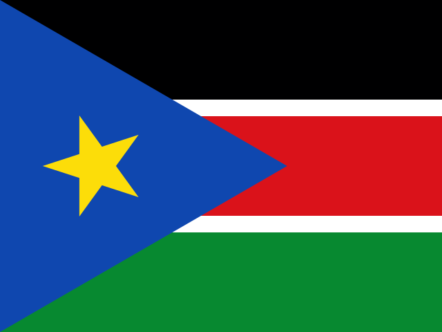

South Sudan: verified news and risk
Sub-Saharan Africa · 15 events · 3 high-risk · Latest coverage 30 Oct
In brief
South Sudan appears in 15 events on ATHENA, across 6 of its ten sections. 3 rated high-risk (6/10 or more); the highest is “Kenya releases 20 Ebola contacts after 21 days in quarantine” at 6.4.
By section
Most important events
- Health & ScienceKenya releases 20 Ebola contacts after 21 days in quarantineRisk 6.4 · 27 Oct
- SportSenegal gears up for historic 2026 Youth Olympic Games in DakarGeneral news · 30 Oct
- Health & ScienceCongo-Kinshasa: Cases Top 10,000 in DR Congo Ebola OutbreakRisk 6.3 · 29 Oct
- Technology & CyberWebsites Go Dark as AI Exposes Critical Security FlawsRisk 4.4 · 23 Oct
- GeopoliticsSudan: UN, France Condemn Escalating Drone Attacks Across SudanRisk 6.2 · 29 Oct
- GeopoliticsRussia-Africa Summit lauds African leadersRisk 1.7 · 29 Oct
- GeopoliticsUPDATE 1-UK sanctions 15 commanders from rival Sudan factions over wartime rapeRisk 4.5 · 27 Oct
- SportGhana to play Mexico in Round of 16 at FIFA U-15 World Cup & FestivalGeneral news · 29 Oct
- Society & LawOne year since the fall of El Fasher, Sudan’s civilians continue to sufferRisk 5.1 · 27 Oct
- GeopoliticsMSF: Dozens killed,150 injured in Sudanese army Nyala drone strikeRisk 5.7 · 29 Oct
Countries in the same events
Local news from South Sudan
Loading…